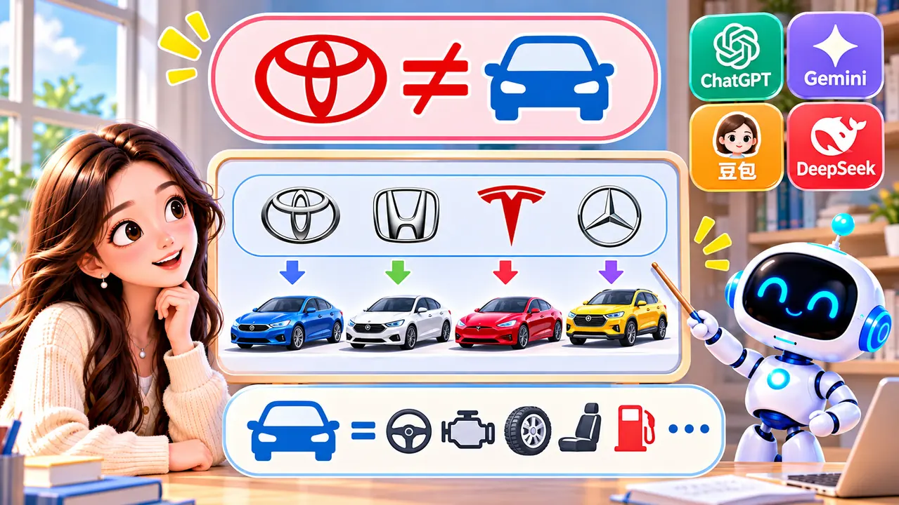

Welcome to AI Knowledge Class — a place to explore big questions about technology without the jargon. Episode 1 starts where almost everyone starts: what is AI, really?
You may already use ChatGPT, Gemini, 豆包, or DeepSeek for homework ideas, translation, or curiosity. Those tools are real and useful — but they are not the whole story of artificial intelligence.
AI also works quietly when your phone sorts photos, when a map predicts traffic, or when a game adapts to how you play. In this article we clear up six common mix-ups, then put the real idea into plain words. Each picture sits right beside the idea it shows.
You might hear a classmate say, “Just ask AI.” You might see a headline about a new model that calls it “the whole future of AI.” When names change every few months, it is easy to confuse an app, a company, and the entire field.
This episode walks through six mix-ups in order. Straighten those out, and the words artificial intelligence start to mean something you can explain to a friend. We begin with apps and brand names — because those are what you see on a phone screen first.
Apps, brands, and the bigger field
When the same logos show up in news feeds and group chats, many people treat them as the whole story. These first two mix-ups are about that shortcut.
Mix-up 1: “ChatGPT, Gemini, 豆包, and DeepSeek are AI.”
Not quite. Think of these apps as doors or screens that let you talk with the model running behind them. Opening ChatGPT is like tapping one icon on your phone: you are using one feature inside a much bigger world of computing, not “the entire phone” in one app.
Scientists and engineers also build AI for hospitals, factories, cars, and research labs — often with no chat box at all. One popular app is a great starting point, but it is not the full definition of AI.
Behind the app is a model — software trained on huge amounts of data. The app is how you reach it; the model is part of what researchers mean when they say “AI systems.” Learning that difference now will help you in later episodes when we compare types of AI.
Mix-up 2: “AI is ChatGPT.”

ChatGPT helped many people meet generative AI for the first time, and it is one product from OpenAI. Google, Anthropic, Baidu, DeepSeek, and others ship their own models too — and the field keeps growing.
Here is a friendly analogy. If someone asks, “What is a car?”, you might picture Toyota, Honda, or Tesla. Toyota is a brand — not the same thing as the whole idea of “car”. ChatGPT, Gemini, 豆包, and DeepSeek are products in the AI world; they are not the entire world.
New products will keep appearing, and old ones will update. That is normal in a growing field. What stays steady is the bigger idea: many tools, many teams, many uses — not a single app with one name.
Beyond chat and creation
Chat windows are easy to notice. The next two mix-ups remind us that AI can do and decide — not only type back at you.
Mix-up 3: “AI is a chatbot.”
Chatting is the part you see. AI can also help a car spot pedestrians, help doctors review scans, guide warehouse robots, translate speech in real time, or flag strange patterns in data. Much of that work happens quietly while you go about your day.
Mix-up 4: “AI is only for making things.”
Generative tools can write, draw, or compose — and that is exciting. Plenty of other systems recognize, judge, predict, and complete tasks without creating new pictures or paragraphs. A lane-assist warning on a highway is doing AI work even if it never types a single word.
At school you might meet both sides: an AI helper that drafts ideas and software that checks whether an image or sentence matches patterns it has seen before. Same field — different jobs.
Use your judgment
The last two mix-ups are about trust. A smart answer can still deserve a second look — especially when you are learning.
Mix-up 5: “AI thinks like a person.”
A model can sound confident and even kind, but it does not have your memories, feelings, or lived experience. It predicts likely words from patterns — it does not truly “feel” happy or worried. Treat its replies as information to think about — not as a friend who “just knows” you.
Mix-up 6: “AI always knows the answer.”
Models can be wrong — especially when a question is vague, out of date, or outside what they were trained on. For school reports you will hand in, health questions, money, or safety, double-check important facts and never share passwords or private details in a chat.
Try this habit: after you read an answer, ask yourself, “Where could I verify this?” — a textbook, a teacher, or a trusted site — then decide what you believe.
So what is AI?
After those mix-ups, the idea gets simpler: artificial intelligence is about giving computers abilities people often had to do themselves — noticing patterns, learning from examples, making judgments, predicting what might happen next, and sometimes creating something new.
You will hear two families of tools talked about a lot: traditional AI (recognition, prediction, decision support) and generative AI (text, images, audio, and more). They overlap, but they are not twins. Episode 2 compares them with everyday examples — including a smart-car story you can picture in your head.
Keep the five ability words in mind — recognize faces in photos, learn from examples in class, judge whether a claim makes sense, predict what might happen next in an experiment, and sometimes create a new paragraph or picture. That is the map for the rest of this series.